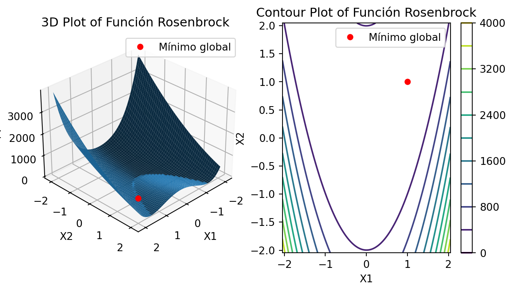
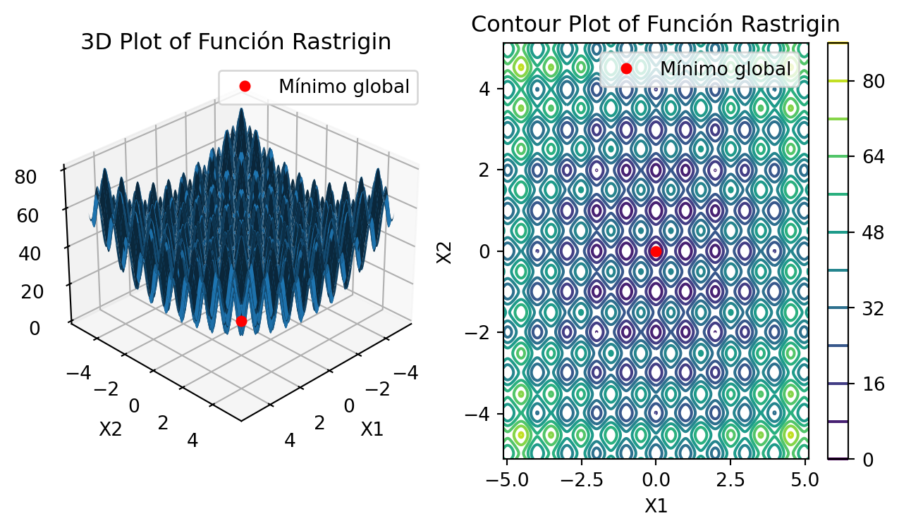
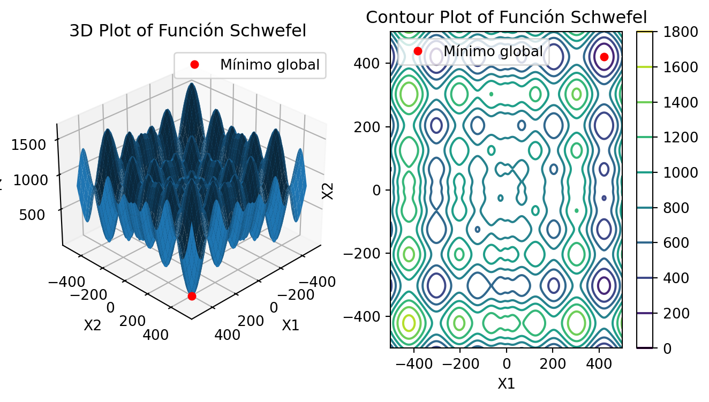
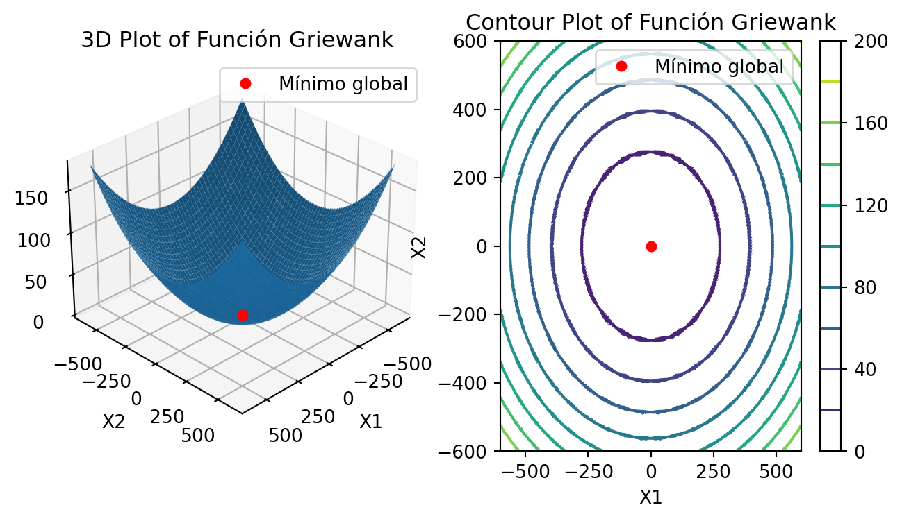
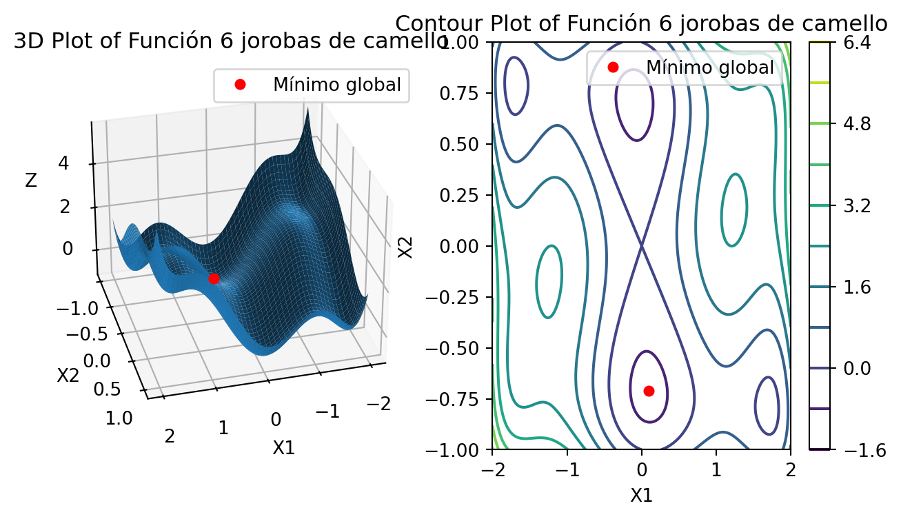
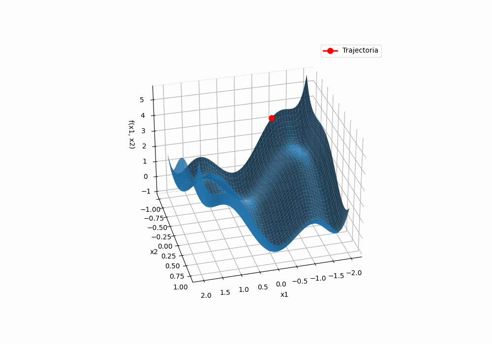
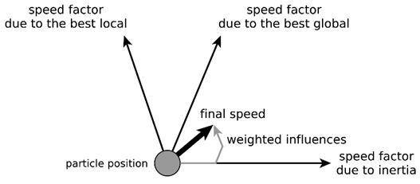
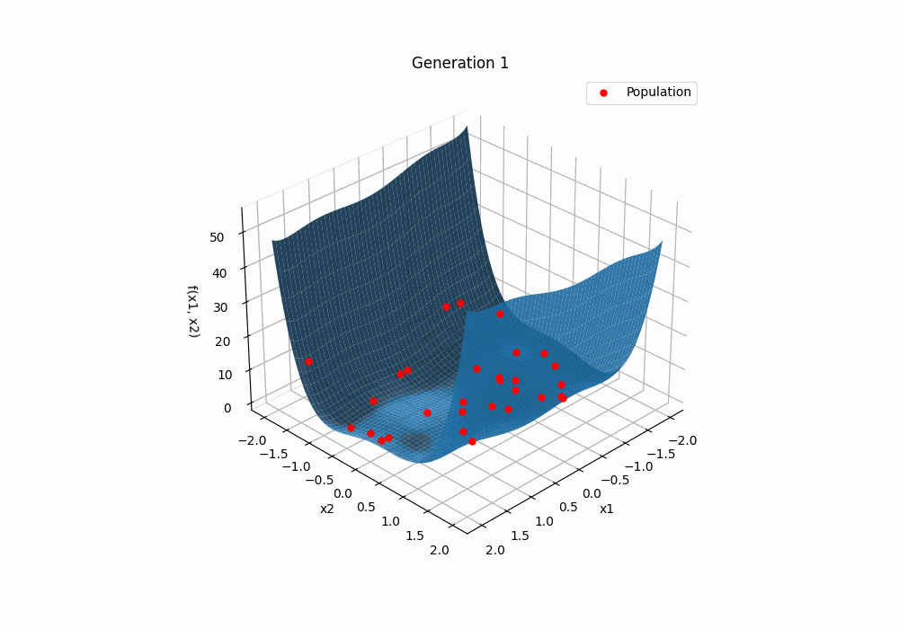

import numpy as npimport pandas as pdimport matplotlib.pyplot as pltfrom mpl_toolkits.mplot3d import Axes3Dfrom matplotlib.animation import FuncAnimationfrom IPython.display import HTMLfrom IPython.display import displayfrom IPython.display import Image as IPImageimport iofrom PIL import Image
El objetivo de esta sección es evaluar diversos métodos de optimización aplicados a varias funciones, con el fin de medir su rendimiento. En particular, se utilizarán las funciones de Rosenbrock, Schwefel, Griewank, Goldstein-Price y la función de las seis jorobas de camello. Estas funciones serán optimizadas mediante el método del gradiente descendente y tres algoritmos heurísticos: Algoritmos Evolutivos, Optimización por Enjambre de Partículas y Evolución Diferencial.
Al final, se comentará sobre los aportes de los métodos de descenso por gradiente y los métodos heurísticos, considerando el valor final de la función objetivo y el número de evaluaciones de la función objetivo, en un entorno de simulación con varios parámetros y condiciones para garantizar conclusiones significativas.
1 Funciones a optimizar
Se seleccionaron seis funciones comúnmente empleadas para evaluar métodos de optimización, debido a sus características particulares. Estas funciones presentan desafíos como la existencia de un mínimo global acompañado de múltiples mínimos locales, así como valles que pueden dificultar la convergencia de los algoritmos. A continuación, se describen dichas funciones, incluyendo su forma funcional generalizada para \(d\) dimensiones, su representación gráfica en 2 dimensiones, el valor del mínimo global, una breve descripción de cada función y el rango de evaluación sugerido por diversos autores. Las gráficas fueron generadas a partir de la funcion plot_function() que se muestra en la pestaña de Code sugerida.
Representación gráfica de la función de Rosenbrock.
Code
# Función de Rosenbrockdef rosenbrock(x, a=1, b=100):""" Calcula el valor de la función de Rosenbrock. x: vector de entrada (numpy array) a, b: parámetros de la función """return (sum(b * (x[1:] - x[:-1]**2)**2+ (x[:-1] - a)**2))plot_function(rosenbrock, x1_range=(-2.048, 2.048), x2_range=(-2.048, 2.048), title="Función Rosenbrock", x1_point=1, x2_point=1)

Elaboración propia.
En 2 dimensiones se puede definir como se muestra en la Ecuación (2).
La Función de Rosenbrock, también conocida como función del valle o del plátano, es ampliamente utilizada para evaluar algoritmos de optimización basados en gradientes. Esta función es unimodal y presenta su mínimo global en un valle parabólico estrecho, lo que facilita su localización. Sin embargo, según Simon Fraser University (n.d.) citando a Picheny, Wagner, and Ginsbourger (2012), la convergencia hacia este mínimo puede ser desafiante debido a la naturaleza del valle.
La función se evalúa generalmente en el hipercubo \(x_i \in [-5, 10]\) y tiene un mínimo global en \(f(1,...,1) = 0\)
Representación gráfica de la función de Rastrigin.
Code
# Función de Rastrigindef rastrigin(x):""" Calcula el valor de la función de Rastrigin. x: vector de entrada (numpy array) """ d =len(x)return10* d +sum(x**2-10* np.cos(2* np.pi * x))plot_function(rastrigin, x1_range=(-5.12, 5.12), x2_range=(-5.12, 5.12), title="Función Rastrigin", x1_point=0, x2_point=0)

Elaboración propia.
Segun Simon Fraser University (n.d.), la función de Rastrigin tiene varios mínimos locales. Es altamente multimodal, pero las ubicaciones de los mínimos se distribuyen regularmente. La función generalmente se evalúa en el hipercubo \(x_i \in [-5.12, 5.12]\) y su mínimo local se encuentra en \(f(0,...,0)=0\).
# Función de Schwefeldef schwefel(x):""" Calcula el valor de la función de Schwefel. x: vector de entrada (numpy array) """ d =len(x)return418.9829* d -sum(x * np.sin(np.sqrt(np.abs(x))))plot_function(schwefel, x1_range=(-500, 500), x2_range=(-500, 500), title="Función Schwefel", x1_point=420.9687, x2_point=420.9687)

Elaboración propia.
Segun Simon Fraser University (n.d.) La función de Schwefel es compleja, con muchos mínimos locales. Normalmente se evalpúa en el hipercubo \(x_i \in [-500,500]\). Su minimo global está en \(f(420.9687,...,420.9687)=0\)
# Función de Griewankdef griewank(x):""" Calcula el valor de la función Griewank. x: numpy array unidimensional (1D) o un array con forma (d, n1, n2) para evaluaciones vectorizadas. Retorna: - Un valor escalar si `x` es 1D. - Una matriz (n1, n2) si `x` tiene forma (d, n1, n2). """ x = np.asarray(x)if x.ndim ==1:# Caso 1D: calcular para un solo vector d =len(x) sum_term = np.sum(x**2) /4000 product_term = np.prod(np.cos(x / np.sqrt(np.arange(1, d +1))))return1+ sum_term - product_termelif x.ndim ==3:# Caso ND: calcular para una cuadrícula (vectorizado) d = x.shape[0] i_indices = np.arange(1, d +1).reshape(-1, 1, 1) sum_term = np.sum(x**2, axis=0) /4000 product_term = np.prod(np.cos(x / np.sqrt(i_indices)), axis=0)return1+ sum_term - product_termelse:raiseValueError("La entrada debe ser un array 1D o un array con forma (d, n1, n2).")plot_function(griewank, x1_range=(-600, 600), x2_range=(-600, 600), title="Función Griewank", x1_point=0, x2_point=0)

Elaboración propia.
Segun Simon Fraser University (n.d.) la función de Griewank tiene muchos mínimos locales generalizados, que se distribuyen de forma regular. Lo que hace compleja su optimización al minimo global. Normalmente se evalua en el hipercubo \(x_i \in [-600,600]\). Su minimo global está en \(f(0,...,0)=0\)
La función Goldstein-Price es una función en 2 dimensiones y tiene varios mínimos locales. Segun Molga and Smutnicki (2005), la función generalmente se evalúa en el cuadrado \(x_1 \in [-2, 2]\) y \(x_1 \in [-2, 2]\) . Su mínimo global es \(f(0,-1) = 3\)
Representación gráfica de la función de las seis jorobas del camello.
Code
# Función de las seis jorobas de camellodef camel_six_humps(x):""" Calcula el valor de la función de las seis jorobas de camello. x1, x2: coordenadas en 2D """ x1 = x[0] x2 = x[1] term1 = (4-2.1* x1**2+ x1**4/3) * x1**2 term2 = x1 * x2 term3 = (-4+4* x2**2) * x2**2return term1 + term2 + term3plot_function(camel_six_humps, x1_range=(-2, 2), x2_range=(-1, 1), title="Función 6 jorobas de camello", x1_point=0.0898, x2_point=-0.7126, elev=30, azim=75 )

Elaboración propia.
La función de las seis jorobas de camello es una función en 2 dimensiones.Segun Molga and Smutnicki (2005) la función tiene seis mínimos locales, dos de los cuales son globales y recomienda evaluar la función en el rectángulo \(x_1 \in [-3, 3], x_2 \in [-2, 2]\), donde los mínimos globales son \(f(0.0898,-0.7126) = -1.0316\) y \(f(-0.0898, 0.7126) = -1.0316\)
2 Proceso de optimización
2.1 Optimización por descenso del gradiente
El descenso del gradiente es un algoritmo de optimización iterativo que busca encontrar el mínimo local de una función diferenciable. La idea principal es moverse en la dirección opuesta al gradiente de la función en cada punto, ya que el gradiente apunta en la dirección de máximo crecimiento.
De acuerdo con Bishop (2006), para una función \(f(x)\), el algoritmo actualiza iterativamente el punto \(x\) usando la regla que se observa en la Ecuación 8.
\[
x_{t+1} = x_t - \eta \nabla f(x_t) \tag{8}
\]
donde:
\(x_t\) es el punto actual
\(\eta\) es la tasa de aprendizaje
\(\nabla f(x_t)\) es el gradiente de la función en \(x_t\)
El gradiente \(\nabla f\) es un vector que contiene las derivadas parciales respecto a cada variable, tal como se ilustra en la Ecuación 9: \[
\nabla f(x_1, x_2) = \begin{bmatrix} \frac{\partial f}{\partial x_1}, \frac{\partial f}{\partial x_2} \end{bmatrix} \tag{9}
\]
El gradiente \(\nabla f\) se puede aproximar numéricamente usando diferencias finitas. Bishop (2006) plantean que, se puede mejorar consideramblemente la presición del método usando diferencias centrales simétricas. En este caso, para una función \(f(x_1, x_2)\), las derivadas parciales se calculan como se muestra en las Ecuaciones 10 y 11.
donde \(h\) es un pequeño incremento (típicamente \(10^{-7}\) o \(10^{-8}\)).
Code
def partial_derivative(x0, func, i, h, *args): e = np.zeros(len(x0)) e[i] =1return (func(x0+h*e, *args) - func(x0-h*e, *args))/(2*h)def numerical_gradient(x0, func, h, *args): gradient = np.zeros(len(x0))for i inrange(len(x0)): gradient[i] = partial_derivative(x0, func, i, h, *args)return gradientdef gradient_descent_num_dev_mult(x0, eta, func, h, max_iter, *args):""" Perform gradient descent with numerical derivatives for a multi-dimensional function. Parameters: x0 (array-like): Initial guess for the variables. eta (float): Learning rate. func (callable): Function to minimize. h (float): Step size for numerical gradient calculation. max_iter (int): Maximum number of iterations. *args: Additional arguments for the function. Returns: result_df (pd.DataFrame): DataFrame with columns ['x1', 'x2', 'f(x1,x2)'] containing the trajectory of points. """ x_old = np.array(x0) x_hist = [] # List to store the history of x and f(x)for i inrange(max_iter):# Calculate the gradient numerically gradient = numerical_gradient(x_old, func, h, *args)# Update x based on gradient descent rule x_new = x_old - eta * gradient# Append current x and function value to history x_hist.append([x_old[0], x_old[1], func(x_old, *args)])# Update x_old x_old = x_new# Add the final position and function value x_hist.append([x_new[0], x_new[1], func(x_new, *args)])# Convert history to a pandas DataFrame result_df = pd.DataFrame(x_hist, columns=['x1', 'x2', 'f(x1,x2)'])return result_df
A continuación, se presentan las animaciones que ilustran la aplicación del descenso del gradiente en las seis funciones evaluadas. Los parámetros iniciales, la tasa de aprendizaje y el número de iteraciones del algoritmo fueron seleccionados cuidadosamente para optimizar la visualización del funcionamiento del método.Estos parámetros se detallan en las tablas a continuación.
Aplicación del descenso del gradiente en la función de las seis jorobas del camello.  Elaboración propia.
El método del gradiente descendente puede imaginarse como una persona deslizándose por una colina representada por una función. El punto de inicio es el lugar desde donde comienza a deslizarse, y la tasa de aprendizaje actúa como la aceleración que controla la velocidad del deslizamiento en cada paso. Si esta aceleración es demasiado alta, puede ayudar a llegar más rápido al valle más bajo, pero también existe el riesgo de salir del camino o incluso terminar subiendo una colina debido a un impulso excesivo que sobrepasa el objetivo.
Para garantizar que este método sea eficiente, es importante considerar lo siguiente:
Tasa de aprendizaje: Un valor demasiado grande puede causar divergencia, mientras que uno muy pequeño puede hacer que el proceso sea extremadamente lento.
Punto inicial: La ubicación inicial afecta la trayectoria y la probabilidad de alcanzar el mínimo global.
Criterio de parada: Es esencial definir cuándo detener el algoritmo, ya sea por alcanzar un número máximo de iteraciones o porque la mejora entre pasos sea insignificante (convergencia).
2.2 Agoritmo genético
Un algoritmo genético (GA) es un método heurístico de optimización inspirado en los principios de la selección natural y la evolución biológica, propuesto inicialmente por Holland (1975). Este enfoque busca soluciones óptimas en un espacio de búsqueda utilizando una población de candidatos.
2.2.1 Concepto General
El algoritmo genético simula el proceso evolutivo a través de las siguientes etapas:
Cada individuo de la población es evaluado usando la función objetivo mostrada a continuación, en la Ecuación 16.
\[
\text{Fitness}_i = f(x_i) \tag{16}
\]
Code
# Evaluar fitnessdef evaluate_fitness(population,fitness_function):return np.array([fitness_function(ind) for ind in population])
Selección
Se seleccionan individuos para reproducirse basándose en su fitness. Un métodos común es el método de torneo, observado en la Ecuación 17, donde primero se seleccionan \(k\) individuos al azar y luego se elige al mejor de ellos (quien tenga el mejor fitness):
\[
\text{Individuo seleccionado} = \arg\min_{j \in S} \text{Fitness}_j, \; S \subseteq \{1, \ldots, P\}, \; |S| = k \tag{17}
\]
Dos individuos (padres) se combinan para generar descendencia. Un método común es punto de corte único, donde primero se elige un punto de cruce aleatorio \(k\) y después se genera la descendencia mezclando las características de los padres, como se observa en las Ecuaciones 18 y 19.
La nueva población es evaluada, y mediante el uso de elitismo, es posible conservar a los mejores individuos. El algoritmo continúa iterando con esta población actualizada, mejorando progresivamente la optimización de la función objetivo al incrementar el fitness general de la población.
Code
# Algoritmo completodef genetic_algorithm(fitness_function, population_size, generations, mutation_rate, crossover_rate, dim, bounds, delta): population = initialize_population(population_size, dim, bounds) best_individual =None trajectory = [] populations = []for generation inrange(generations): populations.append(population.copy()) fitness = evaluate_fitness(population, fitness_function)if best_individual isNoneor np.min(fitness) < fitness_function(best_individual): best_individual = population[np.argmin(fitness)]# Guardar la mejor solución de esta generación trajectory.append((*best_individual, fitness_function(best_individual)))# Selección selected_population = tournament_selection(population, fitness)# Cruce y mutación new_population = []for i inrange(0, len(selected_population), 2):if i +1<len(selected_population): child1 = crossover(selected_population[i], selected_population[i+1], crossover_rate) child2 = crossover(selected_population[i+1], selected_population[i], crossover_rate) new_population.extend([child1, child2])else: new_population.append(selected_population[i]) population = np.array([mutate(ind, bounds, mutation_rate, delta) for ind in new_population])# Convertir la trayectoria a DataFrame columns = [f'x{i+1}'for i inrange(dim)] + ['f(x)'] df = pd.DataFrame(trajectory, columns=columns)return best_individual, fitness_function(best_individual), df, populations
Aplicación del algoritmo genético sobre la función de las seis jorobas del camello. Elaboración propia.
Los algoritmos genéticos convergen hacia soluciones aproximadas, aunque no garantizan alcanzar el óptimo global. Sin embargo, suelen mostrar una rápida convergencia en pocas generaciones. Estos algoritmos buscan equilibrar dos objetivos clave: exploración, que consiste en descubrir nuevas regiones del espacio de búsqueda, y explotación, enfocada en refinar y mejorar las soluciones existentes.
Para las simulaciones presentadas en los GIF, se utilizaron los siguientes parámetros: tamaño de población = 30, número de generaciones = 20, tasa de mutación = 0.5, y tasa de cruce = 0.5. El parámetro de mutación \(\delta\) se ajusta según los límites de evaluación de las funciones objetivo, representando aproximadamente un 5% del rango de dichas funciones.
2.2.3 Observaciones
Ventajas:
No requiere derivadas ni condiciones específicas en \(f(x)\) .
Es efectivo en espacios de búsqueda multimodales o no convexos.
Adaptable a diversos problemas.
Desventajas:
Puede ser computacionalmente costoso.
No garantiza convergencia al óptimo global.
Requiere ajuste cuidadoso de parámetros.
2.3 Optimización de partículas
2.3.1 Concepto Básico y Analogía
De acuerdo con Kennedy and Eberhart (1995), puede decirse que la Optimización por Enjambre de Partículas (PSO) es una técnica metaheurística inspirada en el comportamiento social de los animales, como los pájaros o los peces. En PSO, cada solución potencial al problema se representa como una partícula que se mueve en un espacio de búsqueda multidimensional. Cada partícula ajusta su posición y velocidad en cada iteración, basándose en su propia mejor posición encontrada (pBest) y la mejor posición encontrada por todo el enjambre (gBest).
Los métodos PSO se atribuyen originalmente a los investigadores Kennedy (1997). En un principio fueron concebidos para elaborar modelos de conductas sociales,como el movimiento descrito por los organismos vivos en una bandada de aves o un banco de peces. Posteriormente el algoritmo se simplificó y se comprobó que era adecuado para problemas de optimización.
Funcionamiento de PSOz
En el algoritmo PSO (Particle Swarm Optimization), cada partícula, que representa un individuo, posee una posición p⃗ dentro del espacio de búsqueda y una velocidad v⃗ que determina su desplazamiento. Estas partículas, al igual que objetos en un entorno físico, cuentan con una inercia w, la cual conserva su movimiento en la dirección previamente seguida.
Code
self.positions = np.random.uniform(self.bounds[:, 0],self.bounds[:, 1], size=(n_particles, dimensions))self.velocities = np.zeros((n_particles, dimensions))# Evaluar posiciones inicialesself.scores = np.array([self.objective_function(p) for p inself.positions])
Además, su aceleración, que representa un cambio en la velocidad, está influenciada por dos factores principales:
Atracción hacia su mejor posición personal: Cada partícula tiende a moverse hacia la mejor ubicación que ha identificado en su trayectoria histórica (pbest).
Atracción hacia la mejor posición global: Las partículas también se dirigen hacia la mejor ubicación encontrada por el grupo completo en el espacio de búsqueda (pgbest).
Ilustración del funcionamiento del algoritmo PSO. 
for iteration inrange(self.max_iter):# Actualizar velocidades r1, r2 = np.random.rand(2)self.velocities = (self.w *self.velocities +self.c1 * r1 * (self.p_best -self.positions) +self.c2 * r2 * (self.g_best -self.positions))# Actualizar posicionesself.positions +=self.velocities# Mantener partículas dentro de los límitesself.positions = np.clip(self.positions,self.bounds[:, 0],self.bounds[:, 1] )# Evaluar nuevas posicionesself.scores = np.array([self.objective_function(p) for p inself.positions])# Actualizar mejores posiciones personales improved_mask =self.scores <self.p_best_scoresself.p_best[improved_mask] =self.positions[improved_mask]self.p_best_scores[improved_mask] =self.scores[improved_mask]# Actualizar mejor posición global min_score_idx = np.argmin(self.p_best_scores)ifself.p_best_scores[min_score_idx] <self.g_best_score:self.g_best =self.p_best[min_score_idx].copy()self.g_best_score =self.p_best_scores[min_score_idx]
El algoritmo se detiene cuando se alcanza un número máximo de iteraciones, o cuando la mejora en la función objetivo es menor a un umbral predefinido.
Al implementar el algoritmo, se presentó un comportamiento oscilatorio donde las partículas convergían inicialmente pero luego se dispersaban de manera repentina. El análisis reveló cuatro posibles causas: velocidades excesivas de las partículas, coeficientes de aprendizaje mal ajustados, peso de inercia estático y ausencia de un mecanismo de estabilización.
La solución implementada aborda estos problemas mediante cuatro modificaciones: Se limitó la velocidad máxima al 10% del espacio de búsqueda para evitar saltos excesivos, se optimizaron los coeficientes cognitivo y social a un valor de 2.0 para balancear exploración y explotación, se implementó un peso de inercia dinámico que decrece linealmente de 0.9 a 0.4 durante la optimización y se añadió un factor de constricción calculado a partir de los coeficientes de aprendizaje para garantizar convergencia matemática.
Estas modificaciones resultaron en una mejora significativa en la estabilidad del algoritmo, con una transición más suave entre las fases de exploración y explotación, y una convergencia más consistente hacia el óptimo global.
Aplicación de optimización de partículas sobre la función de las seis jorobas del camello.  Elaboración propia.
2.4 Optimización diferencial
Funcionamiento Básico
La Evolución Diferencial (ED) es un algoritmo de optimización poblacional inspirado en los procesos evolutivos naturales. Al igual que otros algoritmos de esta categoría, la ED mantiene una población de soluciones candidatas, las cuales se recombinan y mutan para producir nuevos individuos los cuales serán elegidos de acuerdo al valor de su función de desempeño. Lo que caracteriza a la ED es el uso de vectores de prueba, los cuales compiten con los individuos de la población actual a fin de sobrevivir. (Price and Storn 1995)
Pasos clave:
Inicialización de la población:
Se genera aleatoriamente una población inicial de individuos (soluciones potenciales).
Cada individuo es un vector que representa un punto en el espacio de búsqueda.
Code
def initialize_population(self):""" Inicializa la población de manera aleatoria dentro de los límites especificados Returns: - Matriz numpy con población inicial """# Crea una matriz de ceros con el tamaño de la población population = np.zeros((self.population_size, self.dimension))# Genera valores aleatorios para cada dimensiónfor i inrange(self.dimension): population[:, i] = np.random.uniform(self.bounds[i][0], # Límite inferiorself.bounds[i][1], # Límite superior size=self.population_size # Número de individuos )return population
Evaluación de la población:
Se evalúa el valor de la función objetivo para cada individuo de la población
Generación de nuevos individuos:
Mutación: Se crea un vector mutante sumando a un individuo objetivo una diferencia escalada entre otros dos individuos de la población.
Code
def mutation(self, population):""" Aplica la estrategia de mutación DE/rand/1 Parameters: - population: Población actual Returns: - Población mutada """# Crea una matriz para almacenar la población mutada mutation_pop = np.zeros_like(population)for i inrange(self.population_size):# Selecciona tres individuos aleatorios diferentes candidates =list(range(self.population_size)) candidates.remove(i) r1, r2, r3 = np.random.choice(candidates, 3, replace=False)# Genera un nuevo vector mediante mutación mutation_pop[i] = population[r1] +self.F * (population[r2] - population[r3])# Asegura que los valores estén dentro de los límitesfor j inrange(self.dimension): mutation_pop[i, j] = np.clip( mutation_pop[i, j],self.bounds[j][0],self.bounds[j][1] )return mutation_pop
Cruce: Se crea un vector de prueba combinando el vector mutante y el individuo objetivo mediante un operador de cruce.
Code
def crossover(self, population, mutation_pop):""" Aplica el cruce binomial (crossover) Parameters: - population: Población actual - mutation_pop: Población mutada Returns: - Población de prueba tras el cruce """# Crea una matriz para almacenar la población de prueba trial_pop = np.zeros_like(population)for i inrange(self.population_size):# Genera puntos de cruce basados en CR cross_points = np.random.rand(self.dimension) <=self.CR# Asegura al menos un punto de cruce cross_points[np.random.randint(0, self.dimension)] =True# Genera vector de prueba trial_pop[i] = np.where(cross_points, mutation_pop[i], population[i])return trial_pop
Selección: Se compara el valor de la función objetivo del vector de prueba con el del individuo objetivo. El mejor de los dos se selecciona para la siguiente generación.
Code
def selection(self, population, trial_pop):""" Selección de los mejores individuos Parameters: - population: Población actual - trial_pop: Población de prueba Returns: - Nueva población y sus valores de aptitud """# Calcula la aptitud de la población actual y de prueba pop_fitness = np.array([self.func(ind) for ind in population]) trial_fitness = np.array([self.func(ind) for ind in trial_pop])# Identifica qué individuos de prueba son mejores better_indices = trial_fitness < pop_fitness population[better_indices] = trial_pop[better_indices]return population, np.minimum(pop_fitness, trial_fitness)
Criterio de parada:
Se repiten los pasos 3 y 4 hasta que se cumpla un criterio de parada (número máximo de generaciones, mejora mínima en la función objetivo, etc.), de acuerdo con Martínez Zecua et al. (2019).
Aplicación de optimización diferencial sobre la función de las seis jorobas del camello. Elaboración propia.
3 Resultados
Como se puede observar, en la mayoría de los casos de optimización para una única corrida los puntos óptimos conergen a mínimos locales, lo que indica que los resultados óptimos pueden estar fuertemente influenciados por los valores iniciales de \(x\) o las condiciones de inicio de los algoritmos. Por esta razón, para evaluar el rendimiento y el comportamiento de los algoritmos en un entorno más general, se realizarán múltiples ejecuciones. En cada corrida, los algoritmos partirán de valores iniciales distintos generados aleatoriamente. Con esto se verá cuánto tardan los algoritmos en mejorar la evaluación de la función objetivo y cuáles pueden ser algunos comentarios particulares a realizar. Los resultados se presentarán para los casos de 2 y 3 dimensiones de las funciones.
(Tabla o gráfica de resutlados)
4 Conclusiones y comentarios
5 Discusión
Reflexione sobre los siguientes puntos:
¿Qué aportaron los métodos de descenso por gradiente y qué aportaron los métodos heurísticos? Para responder a esta pregunta, considere:
El valor final de la función objetivo.
El número de evaluaciones de la función objetivo.
Es posible que se requiera realizar varias corridas de los algoritmos para obtener conclusiones significativas.
References
Bishop, Christopher M. 2006. Pattern Recognition and Machine Learning. Springer.
Holland, John H. 1975. Adaptation in Natural and Artificial Systems. University of Michigan Press.
Kennedy, J. 1997. “The Particle Swarm: Social Adaptation of Knowledge.” In Proceedings of the IEEE International Conference on Evolutionary Computation, 303–8.
Kennedy, J., and R. Eberhart. 1995. “Particle Swarm Optimization.” In Proceedings of the IEEE International Conference on Neural Networks (ICNN), 4:1942–48.
Martínez Zecua, M. Y., L. A. Salamanca Vázquez, L. Flores Pulido, E. A. Portilla Flores, and A. Ortíz Arroyo. 2019. “Evolución Diferencial Para La Optimización Global de Procesos de Ingeniería Química.”Research in Computing Science 148 (8).
Picheny, V., T. Wagner, and D. Ginsbourger. 2012. “A Benchmark of Kriging-Based Infill Criteria for Noisy Optimization.”Computational Statistics & Data Analysis.
Price, Kenneth, and Rainer Storn. 1995. “Differential Evolution: A Simple and Efficient Adaptive Scheme for Global Optimization over Continuous Spaces.” Technical Report. International Computer Science Institute.
El fitness representa la aptitud o adecuación de una solución a un problema específico. En nuestro caso, representa la evaluación del individuo en la funcion objetivo.↩︎
Source Code
---title: "Optimización Heurística"format: html: fig-width: 8 # Ancho de las figuras en pulgadas para HTML fig-height: 6 # Alto de las figuras en pulgadas para HTML number-sections: trueauthor: - name: "Julián Castaño Pineda" - name: "Luis Andrés Altamar Romero" - name: "Catalina Restrepo Salgado" - name: "Tomás Rodríguez Taborda"date: "2024-11-29"categories: [optimización, métodos heurísticos, python]image: "image.jpg"bibliography: ref.bibexecute: cache: true---```{python}import numpy as npimport pandas as pdimport matplotlib.pyplot as pltfrom mpl_toolkits.mplot3d import Axes3Dfrom matplotlib.animation import FuncAnimationfrom IPython.display import HTMLfrom IPython.display import displayfrom IPython.display import Image as IPImageimport iofrom PIL import Image```El objetivo de esta sección es evaluar diversos métodos de optimización aplicados a varias funciones, con el fin de medir su rendimiento. En particular, se utilizarán las funciones de Rosenbrock, Schwefel, Griewank, Goldstein-Price y la función de las seis jorobas de camello. Estas funciones serán optimizadas mediante el método del gradiente descendente y tres algoritmos heurísticos: Algoritmos Evolutivos, Optimización por Enjambre de Partículas y Evolución Diferencial.Al final, se comentará sobre los aportes de los métodos de descenso por gradiente y los métodos heurísticos, considerando el valor final de la función objetivo y el número de evaluaciones de la función objetivo, en un entorno de simulación con varios parámetros y condiciones para garantizar conclusiones significativas.# Funciones a optimizarSe seleccionaron seis funciones comúnmente empleadas para evaluar métodos de optimización, debido a sus características particulares. Estas funciones presentan desafíos como la existencia de un mínimo global acompañado de múltiples mínimos locales, así como valles que pueden dificultar la convergencia de los algoritmos. A continuación, se describen dichas funciones, incluyendo su forma funcional generalizada para $d$ dimensiones, su representación gráfica en 2 dimensiones, el valor del mínimo global, una breve descripción de cada función y el rango de evaluación sugerido por diversos autores. Las gráficas fueron generadas a partir de la funcion `plot_function()` que se muestra en la pestaña de `Code` sugerida.```{python}def plot_function(f, x1_range, x2_range, title="Function Plot", x1_point=None, x2_point=None, elev=30, azim=45 ): x1 = np.linspace(x1_range[0], x1_range[1], 400) x2 = np.linspace(x2_range[0], x2_range[1], 400) X1, X2 = np.meshgrid(x1, x2) Z = f(np.array([X1,X2])) fig = plt.figure(figsize=(8, 4))# 3D plot ax1 = fig.add_subplot(121, projection='3d') ax1.plot_surface(X1, X2, Z) ax1.set_title(f'3D Plot of {title}') ax1.set_xlabel('X1') ax1.set_ylabel('X2') ax1.set_zlabel('Z') ax1.view_init(elev=elev, azim=azim)if x1_point isnotNoneand x2_point isnotNone: z_point = f(np.array([x1_point, x2_point])[:, None, None])[0, 0] ax1.plot([x1_point], [x2_point], [z_point], color='r', marker='o', markersize=5, linewidth=0, label="Mínimo global", zorder=5) ax1.legend()# Contour plot ax2 = fig.add_subplot(122) contour = ax2.contour(X1, X2, Z, levels =10) ax2.set_title(f'Contour Plot of {title}') ax2.set_xlabel('X1') ax2.set_ylabel('X2') fig.colorbar(contour, ax=ax2)if x1_point isnotNoneand x2_point isnotNone: ax2.plot([x1_point], [x2_point], color='r', marker='o', markersize=5, linewidth=0, label="Mínimo global", zorder=5) ax2.legend() plt.show()```::: panel-tabset## Función de Rosenbrock$$f(\mathbf{x}) = \sum_{i=1}^{d-1} \left[ 100(x_{i+1} - x_i^2)^2 + (x_i - 1)^2 \right] \tag{1}$$**Figura 1.***Representación gráfica de la función de Rosenbrock.*```{python}#| width: 100%#| height: auto# Función de Rosenbrockdef rosenbrock(x, a=1, b=100):""" Calcula el valor de la función de Rosenbrock. x: vector de entrada (numpy array) a, b: parámetros de la función """return (sum(b * (x[1:] - x[:-1]**2)**2+ (x[:-1] - a)**2))plot_function(rosenbrock, x1_range=(-2.048, 2.048), x2_range=(-2.048, 2.048), title="Función Rosenbrock", x1_point=1, x2_point=1)```Elaboración propia.En 2 dimensiones se puede definir como se muestra en la Ecuación (2).$$ f(x_1, x_2) = (a - x_1)^2 + b(x_2 - x_1^2)^2 \tag{2}$$La Función de Rosenbrock, también conocida como función del valle o del plátano, es ampliamente utilizada para evaluar algoritmos de optimización basados en gradientes. Esta función es unimodal y presenta su mínimo global en un valle parabólico estrecho, lo que facilita su localización. Sin embargo, según @simonfraser_rosenbrock citando a @picheny2012benchmark, la convergencia hacia este mínimo puede ser desafiante debido a la naturaleza del valle.La función se evalúa generalmente en el hipercubo $x_i \in [-5, 10]$ y tiene un mínimo global en $f(1,...,1) = 0$## Función de Rastrigin$$f(\mathbf{x}) = 10d + \sum_{i=1}^{d} \left[ x_i^2 - 10 \cos(2\pi x_i) \right] \tag{3}$$**Figura 2.***Representación gráfica de la función de Rastrigin.*```{python}# Función de Rastrigindef rastrigin(x):""" Calcula el valor de la función de Rastrigin. x: vector de entrada (numpy array) """ d =len(x)return10* d +sum(x**2-10* np.cos(2* np.pi * x))plot_function(rastrigin, x1_range=(-5.12, 5.12), x2_range=(-5.12, 5.12), title="Función Rastrigin", x1_point=0, x2_point=0)```Elaboración propia.Segun @simonfraser_rosenbrock, la función de Rastrigin tiene varios mínimos locales. Es altamente multimodal, pero las ubicaciones de los mínimos se distribuyen regularmente. La función generalmente se evalúa en el hipercubo $x_i \in [-5.12, 5.12]$ y su mínimo local se encuentra en $f(0,...,0)=0$.## Función de Schwefel$$ f(\mathbf{x}) = 418.9829d - \sum_{i=1}^{d} x_i \sin(\sqrt{|x_i|}) \tag{4}$$**Figura 3.***Representación gráfica de la función de Schwefel.*```{python}# Función de Schwefeldef schwefel(x):""" Calcula el valor de la función de Schwefel. x: vector de entrada (numpy array) """ d =len(x)return418.9829* d -sum(x * np.sin(np.sqrt(np.abs(x))))plot_function(schwefel, x1_range=(-500, 500), x2_range=(-500, 500), title="Función Schwefel", x1_point=420.9687, x2_point=420.9687)```Elaboración propia.Segun @simonfraser_rosenbrock La función de Schwefel es compleja, con muchos mínimos locales. Normalmente se evalpúa en el hipercubo $x_i \in [-500,500]$. Su minimo global está en $f(420.9687,...,420.9687)=0$## Función de Griewank$$ f(\mathbf{x}) = 1 + \frac{1}{4000} \sum_{i=1}^{d} x_i^2 - \prod_{i=1}^{d} \cos\left(\frac{x_i}{\sqrt{i}}\right) \tag{5}$$**Figura 4.***Representación gráfica de la función de Griewank.*```{python}# Función de Griewankdef griewank(x):""" Calcula el valor de la función Griewank. x: numpy array unidimensional (1D) o un array con forma (d, n1, n2) para evaluaciones vectorizadas. Retorna: - Un valor escalar si `x` es 1D. - Una matriz (n1, n2) si `x` tiene forma (d, n1, n2). """ x = np.asarray(x)if x.ndim ==1:# Caso 1D: calcular para un solo vector d =len(x) sum_term = np.sum(x**2) /4000 product_term = np.prod(np.cos(x / np.sqrt(np.arange(1, d +1))))return1+ sum_term - product_termelif x.ndim ==3:# Caso ND: calcular para una cuadrícula (vectorizado) d = x.shape[0] i_indices = np.arange(1, d +1).reshape(-1, 1, 1) sum_term = np.sum(x**2, axis=0) /4000 product_term = np.prod(np.cos(x / np.sqrt(i_indices)), axis=0)return1+ sum_term - product_termelse:raiseValueError("La entrada debe ser un array 1D o un array con forma (d, n1, n2).")plot_function(griewank, x1_range=(-600, 600), x2_range=(-600, 600), title="Función Griewank", x1_point=0, x2_point=0)```Elaboración propia.Segun @simonfraser_rosenbrock la función de Griewank tiene muchos mínimos locales generalizados, que se distribuyen de forma regular. Lo que hace compleja su optimización al minimo global. Normalmente se evalua en el hipercubo $x_i \in [-600,600]$. Su minimo global está en $f(0,...,0)=0$## Función Goldstein-Price$$\begin{align}f(x_1, x_2) = & \left[1 + (x_1 + x_2 + 1)^2 (19 - 14x_1 + 3x_1^2 - 14x_2 + 6x_1x_2 + 3x_2^2)\right]\\ & \left[30 + (2x_1 - 3x_2)^2 (18 - 32x_1 + 12x_1^2 + 48x_2 - 36x_1x_2 + 27x_2^2)\right]\end{align} \tag{6}$$**Figura 5.***Representación gráfica de la función de Goldstein-Price.*```{python}# Función Goldstein-Pricedef goldstein_price(x):""" Calcula el valor de la función Goldstein-Price. x1, x2: coordenadas en 2D """ x1=x[0] x2=x[1] term1 = (1+ (x1 + x2 +1)**2* (19-14* x1 +3* x1**2-14* x2 +6* x1 * x2 +3* x2**2)) term2 = (30+ (2* x1 -3* x2)**2* (18-32* x1 +12* x1**2+48* x2 -36* x1 * x2 +27* x2**2))return term1 * term2plot_function(goldstein_price, x1_range=(-2, 2), x2_range=(-2, 2), title="Función Goldstein price", x1_point=0, x2_point=-1)```Elaboración propia.La función Goldstein-Price es una función en 2 dimensiones y tiene varios mínimos locales. Segun @molga2005test, la función generalmente se evalúa en el cuadrado $x_1 \in [-2, 2]$ y $x_1 \in [-2, 2]$ . Su mínimo global es $f(0,-1) = 3$## Función de las seis jorobas de camello$$ f(x_1, x_2) = \left(4 - 2.1x_1^2 + \frac{x_1^4}{3}\right)x_1^2 + x_1x_2 + \left(-4 + 4x_2^2\right)x_2^2 \tag{7}$$**Figura 6.***Representación gráfica de la función de las seis jorobas del camello.*```{python}# Función de las seis jorobas de camellodef camel_six_humps(x):""" Calcula el valor de la función de las seis jorobas de camello. x1, x2: coordenadas en 2D """ x1 = x[0] x2 = x[1] term1 = (4-2.1* x1**2+ x1**4/3) * x1**2 term2 = x1 * x2 term3 = (-4+4* x2**2) * x2**2return term1 + term2 + term3plot_function(camel_six_humps, x1_range=(-2, 2), x2_range=(-1, 1), title="Función 6 jorobas de camello", x1_point=0.0898, x2_point=-0.7126, elev=30, azim=75 )```Elaboración propia.La función de las seis jorobas de camello es una función en 2 dimensiones.Segun @molga2005test la función tiene seis mínimos locales, dos de los cuales son globales y recomienda evaluar la función en el rectángulo $x_1 \in [-3, 3], x_2 \in [-2, 2]$, donde los mínimos globales son $f(0.0898,-0.7126) = -1.0316$ y $f(-0.0898, 0.7126) = -1.0316$:::# Proceso de optimización## Optimización por descenso del gradienteEl descenso del gradiente es un algoritmo de optimización iterativo que busca encontrar el mínimo local de una función diferenciable. La idea principal es moverse en la dirección opuesta al gradiente de la función en cada punto, ya que el gradiente apunta en la dirección de máximo crecimiento.De acuerdo con @bishop2006pattern, para una función $f(x)$, el algoritmo actualiza iterativamente el punto $x$ usando la regla que se observa en la Ecuación 8.$$ x_{t+1} = x_t - \eta \nabla f(x_t) \tag{8}$$donde:- $x_t$ es el punto actual- $\eta$ es la tasa de aprendizaje- $\nabla f(x_t)$ es el gradiente de la función en $x_t$El gradiente $\nabla f$ es un vector que contiene las derivadas parciales respecto a cada variable, tal como se ilustra en la Ecuación 9: $$\nabla f(x_1, x_2) = \begin{bmatrix} \frac{\partial f}{\partial x_1}, \frac{\partial f}{\partial x_2} \end{bmatrix} \tag{9}$$El gradiente $\nabla f$ se puede aproximar numéricamente usando diferencias finitas. @bishop2006pattern plantean que, se puede mejorar consideramblemente la presición del método usando diferencias centrales simétricas. En este caso, para una función $f(x_1, x_2)$, las derivadas parciales se calculan como se muestra en las Ecuaciones 10 y 11.$$ \frac{\partial f}{\partial x_1} \approx \frac{f(x_1 + h, x_2) - f(x_1 - h, x_2)}{2h} \tag{10}$$$$ \frac{\partial f}{\partial x_2} \approx \frac{f(x_1, x_2 + h) - f(x_1, x_2 - h)}{2h} \tag{11}$$donde $h$ es un pequeño incremento (típicamente $10^{-7}$ o $10^{-8}$).```{python}def partial_derivative(x0, func, i, h, *args): e = np.zeros(len(x0)) e[i] =1return (func(x0+h*e, *args) - func(x0-h*e, *args))/(2*h)def numerical_gradient(x0, func, h, *args): gradient = np.zeros(len(x0))for i inrange(len(x0)): gradient[i] = partial_derivative(x0, func, i, h, *args)return gradientdef gradient_descent_num_dev_mult(x0, eta, func, h, max_iter, *args):""" Perform gradient descent with numerical derivatives for a multi-dimensional function. Parameters: x0 (array-like): Initial guess for the variables. eta (float): Learning rate. func (callable): Function to minimize. h (float): Step size for numerical gradient calculation. max_iter (int): Maximum number of iterations. *args: Additional arguments for the function. Returns: result_df (pd.DataFrame): DataFrame with columns ['x1', 'x2', 'f(x1,x2)'] containing the trajectory of points. """ x_old = np.array(x0) x_hist = [] # List to store the history of x and f(x)for i inrange(max_iter):# Calculate the gradient numerically gradient = numerical_gradient(x_old, func, h, *args)# Update x based on gradient descent rule x_new = x_old - eta * gradient# Append current x and function value to history x_hist.append([x_old[0], x_old[1], func(x_old, *args)])# Update x_old x_old = x_new# Add the final position and function value x_hist.append([x_new[0], x_new[1], func(x_new, *args)])# Convert history to a pandas DataFrame result_df = pd.DataFrame(x_hist, columns=['x1', 'x2', 'f(x1,x2)'])return result_df```A continuación, se presentan las animaciones que ilustran la aplicación del descenso del gradiente en las seis funciones evaluadas. Los parámetros iniciales, la tasa de aprendizaje y el número de iteraciones del algoritmo fueron seleccionados cuidadosamente para optimizar la visualización del funcionamiento del método.Estos parámetros se detallan en las tablas a continuación.::: panel-tabset### Función de Rosenbrock$$f(\mathbf{x}) = \sum_{i=1}^{d-1} \left[ 100(x_{i+1} - x_i^2)^2 + (x_i - 1)^2 \right] \tag{1}$$| $x_{1_0}$ | $x_{2_0}$ | $\eta$ | $n$ ||-----------|-----------|--------|-----|| -1.5 | -1.7 | 0.001 | 30 |**Figura 7.***Aplicación del descenso del gradiente en la función de Rosenbrok.*  Elaboración propia.### Función de Rastrigin$$f(\mathbf{x}) = 10d + \sum_{i=1}^{d} \left[ x_i^2 - 10 \cos(2\pi x_i) \right] \tag{3}$$| $x_{1_0}$ | $x_{2_0}$ | $\eta$ | $n$ ||-----------|-----------|--------|-----|| -0.46 | 0.46 | 0.005 | 30 |**Figura 8.***Aplicación del descenso del gradiente en la función de Rastrigin.*  Elaboración propia.### Función de Schwefel$$ f(\mathbf{x}) = 418.9829d - \sum_{i=1}^{d} x_i \sin(\sqrt{|x_i|}) \tag{4}$$| $x_{1_0}$ | $x_{2_0}$ | $\eta$ | $n$ ||-----------|-----------|--------|-----|| 310 | 310 | 0.8 | 30 |**Figura 9.***Aplicación del descenso del gradiente en la función de Schwefel.*  Elaboración propia.### Función de Griewank$$ f(\mathbf{x}) = 1 + \frac{1}{4000} \sum_{i=1}^{d} x_i^2 - \prod_{i=1}^{d} \cos\left(\frac{x_i}{\sqrt{i}}\right) \tag{5}$$| $x_{1_0}$ | $x_{2_0}$ | $\eta$ | $n$ ||-----------|-----------|--------|-----|| -500 | 500 | 70 | 33 |**Figura 10.***Aplicación del descenso del gradiente en la función de Griewank.*  Elaboración propia.### Función Goldstein-Price$$\begin{align}f(x_1, x_2) = & \left[1 + (x_1 + x_2 + 1)^2 (19 - 14x_1 + 3x_1^2 - 14x_2 + 6x_1x_2 + 3x_2^2)\right]\\ & \left[30 + (2x_1 - 3x_2)^2 (18 - 32x_1 + 12x_1^2 + 48x_2 - 36x_1x_2 + 27x_2^2)\right]\end{align} \tag{6}$$| $x_{1_0}$ | $x_{2_0}$ | $\eta$ | $n$ ||-----------|-----------|---------|-----|| 0.5 | -1.5 | 0.00005 | 50 |**Figura 11.***Aplicación del descenso del gradiente en la función de Goldstein-Price.*  Elaboración propia.### Función de las seis jorobas de camello$$ f(x_1, x_2) = \left(4 - 2.1x_1^2 + \frac{x_1^4}{3}\right)x_1^2 + x_1x_2 + \left(-4 + 4x_2^2\right)x_2^2 \tag{7}$$| $x_{1_0}$ | $x_{2_0}$ | $\eta$ | $n$ ||-----------|-----------|--------|-----|| -1 | -1 | 0.015 | 33 |**Figura 12.***Aplicación del descenso del gradiente en la función de las seis jorobas del camello.*  Elaboración propia.:::El método del gradiente descendente puede imaginarse como una persona deslizándose por una colina representada por una función. El punto de inicio es el lugar desde donde comienza a deslizarse, y la tasa de aprendizaje actúa como la aceleración que controla la velocidad del deslizamiento en cada paso. Si esta aceleración es demasiado alta, puede ayudar a llegar más rápido al valle más bajo, pero también existe el riesgo de salir del camino o incluso terminar subiendo una colina debido a un impulso excesivo que sobrepasa el objetivo.Para garantizar que este método sea eficiente, es importante considerar lo siguiente:- **Tasa de aprendizaje**: Un valor demasiado grande puede causar divergencia, mientras que uno muy pequeño puede hacer que el proceso sea extremadamente lento.- **Punto inicial**: La ubicación inicial afecta la trayectoria y la probabilidad de alcanzar el mínimo global.- **Criterio de parada**: Es esencial definir cuándo detener el algoritmo, ya sea por alcanzar un número máximo de iteraciones o porque la mejora entre pasos sea insignificante (convergencia).## Agoritmo genéticoUn algoritmo genético (GA) es un método heurístico de optimización inspirado en los principios de la **selección natural** y la **evolución biológica**, propuesto inicialmente por @holland1975adaptation. Este enfoque busca soluciones óptimas en un espacio de búsqueda utilizando una población de candidatos.### Concepto GeneralEl algoritmo genético simula el proceso evolutivo a través de las siguientes etapas:- **Selección**: Elegir individuos con mayor *fitness*.[^1]- **Cruce**: Combinar soluciones para generar descendencia.- **Mutación**: Introducir variación genética.[^1]: El *fitness* representa la aptitud o adecuación de una solución a un problema específico. En nuestro caso, representa la evaluación del individuo en la funcion objetivo.Matemáticamente, en un problema de minimización, el objetivo es encontrar:$$ x^* = \arg\min_{x \in \mathbb{R}^n} f(x) \tag{12}$$donde:- $x$ representa un individuo en el espacio de búsqueda.- $f(x)$ es la función objetivo que evalúa la calidad de $x$.Cada solución candidata se representa como un **individuo**, que puede ser un vector real o un cromosoma binario, tal como se ilustra en la Ecuación 13:$$x = (x_1, x_2, \ldots, x_n) \in \mathbb{R}^n \tag{13}$$La función objetivo, mostrada en la Ecuación 14, mide qué tan buena es una solución.$$\text{Fitness}(x) = f(x) \tag{14}$$Para problemas de **minimización**, menor $f(x)$ implica mejor fitness.------------------------------------------------------------------------### Etapas**Inicialización de la Población**Se genera una población inicial de $P$ individuos de forma aleatoria dentro de un intervalo $[a, b]$:$$x_{ij} \sim \text{U}(a, b), \quad \forall i \in \{1, 2, \ldots, P\}, \; j \in \{1, 2, \ldots, n\} \tag{15}$$donde:- $x_{ij}$ es la $j-ésima$ coordenada del $i-ésimo$ individuo.```{python}# Inicializar poblacióndef initialize_population(size, dim, bounds):return np.random.uniform(bounds[0], bounds[1], (size, dim))```------------------------------------------------------------------------**Evaluación del Fitness**Cada individuo de la población es evaluado usando la función objetivo mostrada a continuación, en la Ecuación 16.$$\text{Fitness}_i = f(x_i) \tag{16}$$```{python}# Evaluar fitnessdef evaluate_fitness(population,fitness_function):return np.array([fitness_function(ind) for ind in population])```------------------------------------------------------------------------**Selección**Se seleccionan individuos para reproducirse basándose en su fitness. Un métodos común es el método de torneo, observado en la Ecuación 17, donde primero se seleccionan $k$ individuos al azar y luego se elige al mejor de ellos (quien tenga el mejor fitness):$$\text{Individuo seleccionado} = \arg\min_{j \in S} \text{Fitness}_j, \; S \subseteq \{1, \ldots, P\}, \; |S| = k \tag{17}$$```{python}# Selección por torneodef tournament_selection(population, fitness, k=3): selected = []for _ inrange(len(population)): candidates = np.random.choice(range(len(population)), k, replace=False) winner = candidates[np.argmin(fitness[candidates])] selected.append(population[winner])return np.array(selected)```------------------------------------------------------------------------**Cruce (Recombinación)**Dos individuos (padres) se combinan para generar descendencia. Un método común es **punto de corte único**, donde primero se elige un punto de cruce aleatorio $k$ y después se genera la descendencia mezclando las características de los padres, como se observa en las Ecuaciones 18 y 19.$$\text{Hijo 1} = (\text{Padre}_1[:k], \text{Padre}_2[k:]) \tag{18}$$$$\text{Hijo 2} = (\text{Padre}_2[:k], \text{Padre}_1[k:]) \tag{19}$$La probabilidad de realizar un cruce está determinada por $p_c$ (tasa de cruce).```{python}# Crucedef crossover(parent1, parent2, crossover_rate):if np.random.rand() < crossover_rate: point = np.random.randint(1, len(parent1)) child = np.concatenate([parent1[:point], parent2[point:]])return childreturn parent1 if np.random.rand() <0.5else parent2```------------------------------------------------------------------------**Mutación**Se introduce una variación genética al modificar aleatoriamente uno o más genes(variables) en un individuo(punto del plano) con probabilidad $p_m$:$$x_{ij} = x_{ij} + \Delta, \quad \Delta \sim \text{U}(-\delta, \delta) \tag{20}$$donde:- $\Delta$ es una perturbación aleatoria.- $x_{ij}$ se restringe a los límites del problema.```{python}# Mutacióndef mutate(individual, bounds, mutation_rate, delta):for i inrange(len(individual)):if np.random.rand() < mutation_rate: individual[i] += np.random.uniform(-delta, delta) individual[i] = np.clip(individual[i], bounds[0], bounds[1])return individual```------------------------------------------------------------------------**Evaluación y Sustitución**La nueva población es evaluada, y mediante el uso de elitismo, es posible conservar a los mejores individuos. El algoritmo continúa iterando con esta población actualizada, mejorando progresivamente la optimización de la función objetivo al incrementar el fitness general de la población.```{python}# Algoritmo completodef genetic_algorithm(fitness_function, population_size, generations, mutation_rate, crossover_rate, dim, bounds, delta): population = initialize_population(population_size, dim, bounds) best_individual =None trajectory = [] populations = []for generation inrange(generations): populations.append(population.copy()) fitness = evaluate_fitness(population, fitness_function)if best_individual isNoneor np.min(fitness) < fitness_function(best_individual): best_individual = population[np.argmin(fitness)]# Guardar la mejor solución de esta generación trajectory.append((*best_individual, fitness_function(best_individual)))# Selección selected_population = tournament_selection(population, fitness)# Cruce y mutación new_population = []for i inrange(0, len(selected_population), 2):if i +1<len(selected_population): child1 = crossover(selected_population[i], selected_population[i+1], crossover_rate) child2 = crossover(selected_population[i+1], selected_population[i], crossover_rate) new_population.extend([child1, child2])else: new_population.append(selected_population[i]) population = np.array([mutate(ind, bounds, mutation_rate, delta) for ind in new_population])# Convertir la trayectoria a DataFrame columns = [f'x{i+1}'for i inrange(dim)] + ['f(x)'] df = pd.DataFrame(trajectory, columns=columns)return best_individual, fitness_function(best_individual), df, populations```------------------------------------------------------------------------::: panel-tabset### Función de Rosenbrock$$f(\mathbf{x}) = \sum_{i=1}^{d-1} \left[ 100(x_{i+1} - x_i^2)^2 + (x_i - 1)^2 \right] \tag{1}$$**Figura 13.***Aplicación del algoritmo genético sobre la función de Rosenbrok.*  Elaboración propia.### Función de Rastrigin$$f(\mathbf{x}) = 10d + \sum_{i=1}^{d} \left[ x_i^2 - 10 \cos(2\pi x_i) \right] \tag{3}$$**Figura 14.***Aplicación del algoritmo genético sobre la función de Rastrigin.*  Elaboración propia.### Función de Schwefel$$ f(\mathbf{x}) = 418.9829d - \sum_{i=1}^{d} x_i \sin(\sqrt{|x_i|}) \tag{4}$$**Figura 15.***Aplicación del algoritmo genético sobre la función de Schwefel.*  Elaboración propia.### Función de Griewank$$ f(\mathbf{x}) = 1 + \frac{1}{4000} \sum_{i=1}^{d} x_i^2 - \prod_{i=1}^{d} \cos\left(\frac{x_i}{\sqrt{i}}\right) \tag{5}$$**Figura 16.***Aplicación del algoritmo genético sobre la función de Griewank.*  Elaboración propia.### Función Goldstein-Price$$\begin{align}f(x_1, x_2) = & \left[1 + (x_1 + x_2 + 1)^2 (19 - 14x_1 + 3x_1^2 - 14x_2 + 6x_1x_2 + 3x_2^2)\right]\\ & \left[30 + (2x_1 - 3x_2)^2 (18 - 32x_1 + 12x_1^2 + 48x_2 - 36x_1x_2 + 27x_2^2)\right]\end{align} \tag{6}$$**Figura 17.***Aplicación del algoritmo genético sobre la función de Goldstein-Price.*  Elaboración propia.### Función de las seis jorobas de camello$$ f(x_1, x_2) = \left(4 - 2.1x_1^2 + \frac{x_1^4}{3}\right)x_1^2 + x_1x_2 + \left(-4 + 4x_2^2\right)x_2^2 \tag{7}$$**Figura 18.***Aplicación del algoritmo genético sobre la función de las seis jorobas del camello.*  Elaboración propia.:::Los algoritmos genéticos convergen hacia soluciones aproximadas, aunque no garantizan alcanzar el óptimo global. Sin embargo, suelen mostrar una rápida convergencia en pocas generaciones. Estos algoritmos buscan equilibrar dos objetivos clave: **exploración**, que consiste en descubrir nuevas regiones del espacio de búsqueda, y **explotación**, enfocada en refinar y mejorar las soluciones existentes.Para las simulaciones presentadas en los GIF, se utilizaron los siguientes parámetros: tamaño de población = 30, número de generaciones = 20, tasa de mutación = 0.5, y tasa de cruce = 0.5. El parámetro de mutación $\delta$ se ajusta según los límites de evaluación de las funciones objetivo, representando aproximadamente un 5% del rango de dichas funciones.### ObservacionesVentajas:- No requiere derivadas ni condiciones específicas en $f(x)$ .- Es efectivo en espacios de búsqueda multimodales o no convexos.- Adaptable a diversos problemas.Desventajas:- Puede ser computacionalmente costoso.- No garantiza convergencia al óptimo global.- Requiere ajuste cuidadoso de parámetros.## Optimización de partículas### Concepto Básico y AnalogíaDe acuerdo con @kennedy1995particle, puede decirse que la Optimización por Enjambre de Partículas (PSO) es una técnica metaheurística inspirada en el comportamiento social de los animales, como los pájaros o los peces. En PSO, cada solución potencial al problema se representa como una partícula que se mueve en un espacio de búsqueda multidimensional. Cada partícula ajusta su posición y velocidad en cada iteración, basándose en su propia mejor posición encontrada (pBest) y la mejor posición encontrada por todo el enjambre (gBest).Los métodos PSO se atribuyen originalmente a los investigadores @kennedy1997particle. En un principio fueron concebidos para elaborar modelos de conductas sociales,como el movimiento descrito por los organismos vivos en una bandada de aves o un banco de peces. Posteriormente el algoritmo se simplificó y se comprobó que era adecuado para problemas de optimización.**Funcionamiento de PSOz**En el algoritmo PSO (Particle Swarm Optimization), cada partícula, que representa un individuo, posee una posición *p*⃗ dentro del espacio de búsqueda y una velocidad *v*⃗ que determina su desplazamiento. Estas partículas, al igual que objetos en un entorno físico, cuentan con una inercia *w*, la cual conserva su movimiento en la dirección previamente seguida.```{python}#| eval: falseself.positions = np.random.uniform(self.bounds[:, 0],self.bounds[:, 1], size=(n_particles, dimensions))self.velocities = np.zeros((n_particles, dimensions))# Evaluar posiciones inicialesself.scores = np.array([self.objective_function(p) for p inself.positions])```Además, su aceleración, que representa un cambio en la velocidad, está influenciada por dos factores principales:- Atracción hacia su mejor posición personal: Cada partícula tiende a moverse hacia la mejor ubicación que ha identificado en su trayectoria histórica (*pbest).*- Atracción hacia la mejor posición global: Las partículas también se dirigen hacia la mejor ubicación encontrada por el grupo completo en el espacio de búsqueda (*pgbest*).*Ilustración del funcionamiento del algoritmo PSO.* Adaptado de @sancho_pso_image```{python}#| eval: falsefor iteration inrange(self.max_iter):# Actualizar velocidades r1, r2 = np.random.rand(2)self.velocities = (self.w *self.velocities +self.c1 * r1 * (self.p_best -self.positions) +self.c2 * r2 * (self.g_best -self.positions))# Actualizar posicionesself.positions +=self.velocities# Mantener partículas dentro de los límitesself.positions = np.clip(self.positions,self.bounds[:, 0],self.bounds[:, 1] )# Evaluar nuevas posicionesself.scores = np.array([self.objective_function(p) for p inself.positions])# Actualizar mejores posiciones personales improved_mask =self.scores <self.p_best_scoresself.p_best[improved_mask] =self.positions[improved_mask]self.p_best_scores[improved_mask] =self.scores[improved_mask]# Actualizar mejor posición global min_score_idx = np.argmin(self.p_best_scores)ifself.p_best_scores[min_score_idx] <self.g_best_score:self.g_best =self.p_best[min_score_idx].copy()self.g_best_score =self.p_best_scores[min_score_idx]```El algoritmo se detiene cuando se alcanza un número máximo de iteraciones, o cuando la mejora en la función objetivo es menor a un umbral predefinido.Al implementar el algoritmo, se presentó un comportamiento oscilatorio donde las partículas convergían inicialmente pero luego se dispersaban de manera repentina. El análisis reveló cuatro posibles causas: velocidades excesivas de las partículas, coeficientes de aprendizaje mal ajustados, peso de inercia estático y ausencia de un mecanismo de estabilización.La solución implementada aborda estos problemas mediante cuatro modificaciones: Se limitó la velocidad máxima al 10% del espacio de búsqueda para evitar saltos excesivos, se optimizaron los coeficientes cognitivo y social a un valor de 2.0 para balancear exploración y explotación, se implementó un peso de inercia dinámico que decrece linealmente de 0.9 a 0.4 durante la optimización y se añadió un factor de constricción calculado a partir de los coeficientes de aprendizaje para garantizar convergencia matemática.```{python}#| eval: false# Control de Velocidad Máximav_max =0.1* (bounds[:, 1] - bounds[:, 0])velocities = np.clip(velocities, -v_max, v_max)# Peso de Inercia Dinámicow = w_max - (w_max - w_min) * (iteracion / max_iter)# Factor de Constricciónphi = c1 + c2chi =2/abs(2- phi - np.sqrt(phi * phi -4* phi))# Parámetros Optimizadosc1 = c2 =2.0w_max =0.9w_min =0.4```Estas modificaciones resultaron en una mejora significativa en la estabilidad del algoritmo, con una transición más suave entre las fases de exploración y explotación, y una convergencia más consistente hacia el óptimo global.::: panel-tabset### Función de Rosenbrock$$f(\mathbf{x}) = \sum_{i=1}^{d-1} \left[ 100(x_{i+1} - x_i^2)^2 + (x_i - 1)^2 \right] \tag{1}$$**Figura 19.***Aplicación de optimización de partículas sobre la función de Rosenbrock.*  Elaboración propia.### Función de Rastrigin$$f(\mathbf{x}) = 10d + \sum_{i=1}^{d} \left[ x_i^2 - 10 \cos(2\pi x_i) \right] \tag{3}$$**Figura 20.***Aplicación de optimización de partículas sobre la función de Rastrigin.*  Elaboración propia.### Función de Schwefel$$ f(\mathbf{x}) = 418.9829d - \sum_{i=1}^{d} x_i \sin(\sqrt{|x_i|}) \tag{4}$$**Figura 21.***Aplicación de optimización de partículas sobre la función de Schwefel.*  Elaboración propia.### Función de Griewank$$ f(\mathbf{x}) = 1 + \frac{1}{4000} \sum_{i=1}^{d} x_i^2 - \prod_{i=1}^{d} \cos\left(\frac{x_i}{\sqrt{i}}\right) \tag{5}$$**Figura 22.***Aplicación de optimización de partículas sobre la función de Griewank.*  Elaboración propia.### Función Goldstein-Price$$\begin{align}f(x_1, x_2) = & \left[1 + (x_1 + x_2 + 1)^2 (19 - 14x_1 + 3x_1^2 - 14x_2 + 6x_1x_2 + 3x_2^2)\right]\\ & \left[30 + (2x_1 - 3x_2)^2 (18 - 32x_1 + 12x_1^2 + 48x_2 - 36x_1x_2 + 27x_2^2)\right]\end{align} \tag{6}$$**Figura 23.***Aplicación de optimización de partículas sobre la función de Goldstein-Price.*  Elaboración propia.### Función de las seis jorobas de camello$$ f(x_1, x_2) = \left(4 - 2.1x_1^2 + \frac{x_1^4}{3}\right)x_1^2 + x_1x_2 + \left(-4 + 4x_2^2\right)x_2^2 \tag{7}$$**Figura 24.***Aplicación de optimización de partículas sobre la función de las seis jorobas del camello.*  Elaboración propia.:::## Optimización diferencial**Funcionamiento Básico**La Evolución Diferencial (ED) es un algoritmo de optimización poblacional inspirado en los procesos evolutivos naturales. Al igual que otros algoritmos de esta categoría, la ED mantiene una población de soluciones candidatas, las cuales se recombinan y mutan para producir nuevos individuos los cuales serán elegidos de acuerdo al valor de su función de desempeño. Lo que caracteriza a la ED es el uso de vectores de prueba, los cuales compiten con los individuos de la población actual a fin de sobrevivir. [@price1995differential]**Pasos clave:**- **Inicialización de la población:** - Se genera aleatoriamente una población inicial de individuos (soluciones potenciales). - Cada individuo es un vector que representa un punto en el espacio de búsqueda.```{python}def initialize_population(self):""" Inicializa la población de manera aleatoria dentro de los límites especificados Returns: - Matriz numpy con población inicial """# Crea una matriz de ceros con el tamaño de la población population = np.zeros((self.population_size, self.dimension))# Genera valores aleatorios para cada dimensiónfor i inrange(self.dimension): population[:, i] = np.random.uniform(self.bounds[i][0], # Límite inferiorself.bounds[i][1], # Límite superior size=self.population_size # Número de individuos )return population```- **Evaluación de la población:** - Se evalúa el valor de la función objetivo para cada individuo de la población- **Generación de nuevos individuos:** - **Mutación:** Se crea un vector mutante sumando a un individuo objetivo una diferencia escalada entre otros dos individuos de la población.```{python}def mutation(self, population):""" Aplica la estrategia de mutación DE/rand/1 Parameters: - population: Población actual Returns: - Población mutada """# Crea una matriz para almacenar la población mutada mutation_pop = np.zeros_like(population)for i inrange(self.population_size):# Selecciona tres individuos aleatorios diferentes candidates =list(range(self.population_size)) candidates.remove(i) r1, r2, r3 = np.random.choice(candidates, 3, replace=False)# Genera un nuevo vector mediante mutación mutation_pop[i] = population[r1] +self.F * (population[r2] - population[r3])# Asegura que los valores estén dentro de los límitesfor j inrange(self.dimension): mutation_pop[i, j] = np.clip( mutation_pop[i, j],self.bounds[j][0],self.bounds[j][1] )return mutation_pop```- **Cruce:** Se crea un vector de prueba combinando el vector mutante y el individuo objetivo mediante un operador de cruce.```{python}def crossover(self, population, mutation_pop):""" Aplica el cruce binomial (crossover) Parameters: - population: Población actual - mutation_pop: Población mutada Returns: - Población de prueba tras el cruce """# Crea una matriz para almacenar la población de prueba trial_pop = np.zeros_like(population)for i inrange(self.population_size):# Genera puntos de cruce basados en CR cross_points = np.random.rand(self.dimension) <=self.CR# Asegura al menos un punto de cruce cross_points[np.random.randint(0, self.dimension)] =True# Genera vector de prueba trial_pop[i] = np.where(cross_points, mutation_pop[i], population[i])return trial_pop```- **Selección:** Se compara el valor de la función objetivo del vector de prueba con el del individuo objetivo. El mejor de los dos se selecciona para la siguiente generación.```{python}def selection(self, population, trial_pop):""" Selección de los mejores individuos Parameters: - population: Población actual - trial_pop: Población de prueba Returns: - Nueva población y sus valores de aptitud """# Calcula la aptitud de la población actual y de prueba pop_fitness = np.array([self.func(ind) for ind in population]) trial_fitness = np.array([self.func(ind) for ind in trial_pop])# Identifica qué individuos de prueba son mejores better_indices = trial_fitness < pop_fitness population[better_indices] = trial_pop[better_indices]return population, np.minimum(pop_fitness, trial_fitness)```- **Criterio de parada**: - Se repiten los pasos 3 y 4 hasta que se cumpla un criterio de parada (número máximo de generaciones, mejora mínima en la función objetivo, etc.), de acuerdo con @martinez2019evolucion.::: panel-tabset### Función de Rosenbrock$$f(\mathbf{x}) = \sum_{i=1}^{d-1} \left[ 100(x_{i+1} - x_i^2)^2 + (x_i - 1)^2 \right] \tag{1}$$**Figura 25.***Aplicación de optimización diferencial sobre la función de Rosenbrock.*  Elaboración propia.### Función de Rastrigin$$f(\mathbf{x}) = 10d + \sum_{i=1}^{d} \left[ x_i^2 - 10 \cos(2\pi x_i) \right] \tag{3}$$**Figura 26.***Aplicación de optimización diferencial sobre la función de Rastrigin.*  Elaboración propia.### Función de Schwefel$$ f(\mathbf{x}) = 418.9829d - \sum_{i=1}^{d} x_i \sin(\sqrt{|x_i|}) \tag{4}$$**Figura 27.***Aplicación de optimización diferencial sobre la función de Schwefel.*  Elaboración propia.### Función de Griewank$$ f(\mathbf{x}) = 1 + \frac{1}{4000} \sum_{i=1}^{d} x_i^2 - \prod_{i=1}^{d} \cos\left(\frac{x_i}{\sqrt{i}}\right) \tag{5}$$**Figura 28.***Aplicación de optimización diferencial sobre la función de Griewank.*  Elaboración propia.### Función Goldstein-Price$$ \begin{align} f(x_1, x_2) = & \left[1 + (x_1 + x_2 + 1)^2 (19 - 14x_1 + 3x_1^2 - 14x_2 + 6x_1x_2 + 3x_2^2)\right]\\ & \left[30 + (2x_1 - 3x_2)^2 (18 - 32x_1 + 12x_1^2 + 48x_2 - 36x_1x_2 + 27x_2^2)\right] \end{align} \tag{6}$$**Figura 29.***Aplicación de optimización diferencial sobre la función de Goldstein-Price.*  Elaboración propia.### Función de las seis jorobas de camello$$ f(x_1, x_2) = \left(4 - 2.1x_1^2 + \frac{x_1^4}{3}\right)x_1^2 + x_1x_2 + \left(-4 + 4x_2^2\right)x_2^2 \tag{7}$$**Figura 30.***Aplicación de optimización diferencial sobre la función de las seis jorobas del camello.*  Elaboración propia.:::# ResultadosComo se puede observar, en la mayoría de los casos de optimización para una única corrida los puntos óptimos conergen a mínimos locales, lo que indica que los resultados óptimos pueden estar fuertemente influenciados por los valores iniciales de $x$ o las condiciones de inicio de los algoritmos. Por esta razón, para evaluar el rendimiento y el comportamiento de los algoritmos en un entorno más general, se realizarán múltiples ejecuciones. En cada corrida, los algoritmos partirán de valores iniciales distintos generados aleatoriamente. Con esto se verá cuánto tardan los algoritmos en mejorar la evaluación de la función objetivo y cuáles pueden ser algunos comentarios particulares a realizar. Los resultados se presentarán para los casos de 2 y 3 dimensiones de las funciones.(Tabla o gráfica de resutlados)# Conclusiones y comentarios# DiscusiónReflexione sobre los siguientes puntos:¿Qué aportaron los métodos de **descenso por gradiente** y qué aportaron los **métodos heurísticos**? Para responder a esta pregunta, considere:- El **valor final** de la función objetivo.- El **número de evaluaciones** de la función objetivo.Es posible que se requiera realizar **varias corridas** de los algoritmos para obtener conclusiones significativas.
 Elaboración propia.
Elaboración propia. Elaboración propia.
Elaboración propia. Elaboración propia.
Elaboración propia. Elaboración propia.
Elaboración propia. Elaboración propia.
Elaboración propia. Elaboración propia.
Elaboración propia. Elaboración propia.
Elaboración propia. Elaboración propia.
Elaboración propia. Elaboración propia.
Elaboración propia. Elaboración propia.
Elaboración propia. Elaboración propia.
Elaboración propia. Elaboración propia.
Elaboración propia. Elaboración propia.
Elaboración propia.